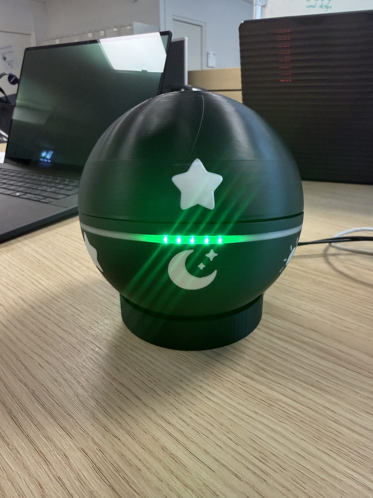
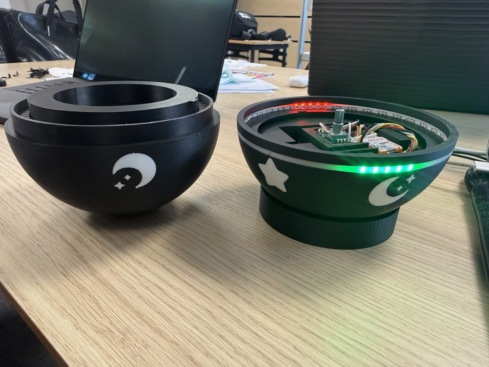
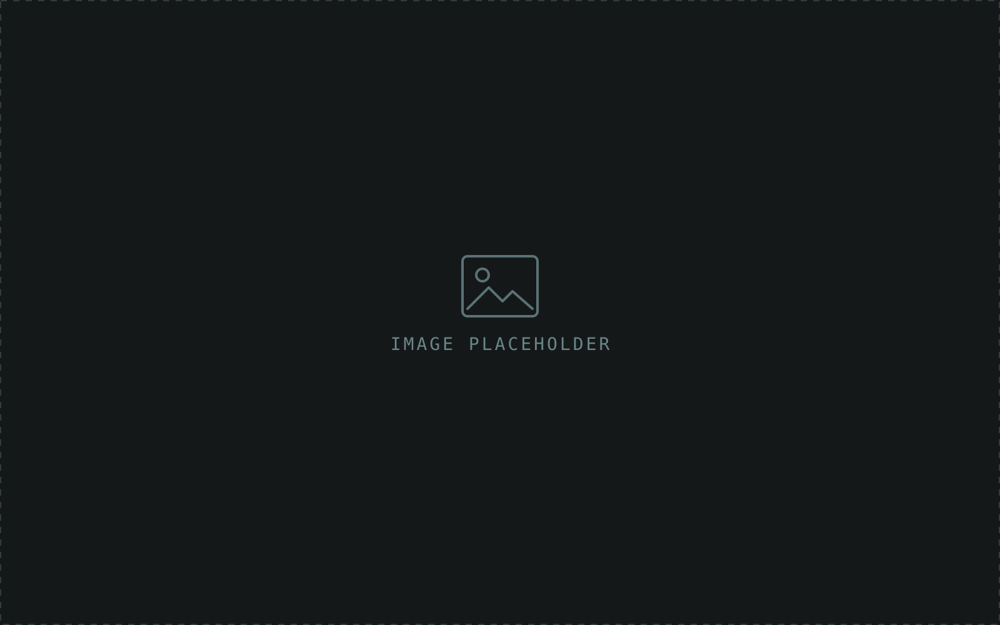

The problem
Tangible user interfaces — physical objects you interact with directly — are known to support collaboration in learning settings, but they are rarely used to shape how people cooperate in games. Most co-op games are played on identical gamepads, where each player can in principle act on their own.
We asked: does a tangible interface designed to enforce positive interdependence promote collaboration more than traditional input?
My role
One of six in the project group, working across research, game design, hardware and evaluation.
Describe what you personally did — e.g. which parts of the controllers, the Unity code or the study you owned, and any decisions you drove.
How we built it
The game
SpellBound is a two-player co-op game set in a medieval hellscape. Players share one point of view and one health pool, and defeat enemies by matching the symbol combos shown above them. Each controller has a set of shared symbols plus one symbol unique to its player, and some spells need both players to act at the same moment.
The rules are designed to force conversation: only one enemy can be targeted at a time, healing locks out attacks, and a streak of correct combos triggers a stronger spell — a reward for coordinating well. The game went from paper prototype, to digital prototype, to a final Unity build with new visuals and spell effects.


The controllers
Each O.R.B. is a 3D-printed sphere made of two interlocking halves with the game’s symbols embossed on them. Players rotate the halves to line up a symbol pair, then press them together to confirm. Inside, an M5Stamp S3 (ESP32) reads a rotary encoder for rotation and press, lights an LED ring green or red depending on whether the alignment is valid, and fires a haptic pulse on confirm.
The orbs send their state over ESP-NOW to a receiver ESP32, which passes it to Unity over USB serial. An input layer in Unity let the same game run on both the orbs and regular gamepads — essential for a fair comparison.
- Swapped a potentiometer for a rotary encoder to get full 360° rotation and a built-in push button.
- Moved from a SparkFun ESP32 Thing Plus with two Li-Po cells to an M5Stamp S3 with a boost-converter breakout, to fit 5 V parts inside the sphere.
- Clamped the encoder’s ever-increasing count with modulo arithmetic so each rotation maps cleanly onto the in-game symbols.

Outcome
We ran a between-subjects study: pairs played SpellBound with either the O.R.B.S. or standard gamepads. Collaboration was measured with questionnaires (CCSS before; GEQ and SPGQ after), behavioural markers coded from gameplay recordings, and a Prisoner’s Dilemma game.
Across the tests, the orb group generally collaborated more: they talked through their moves explicitly, while gamepad players relied more on implicit coordination. The direction was consistent, but the sample lacked the statistical power to confirm the hypothesis — the results point to custom controllers as a way to design for specific teamwork behaviours.
Add the grade (if you want to share it) and one or two things you learned.
Video
Video placeholder — upload the AV production to YouTube or Vimeo and embed it here.